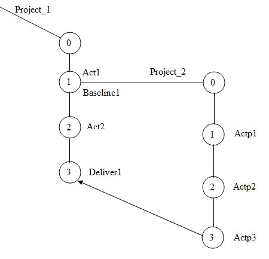
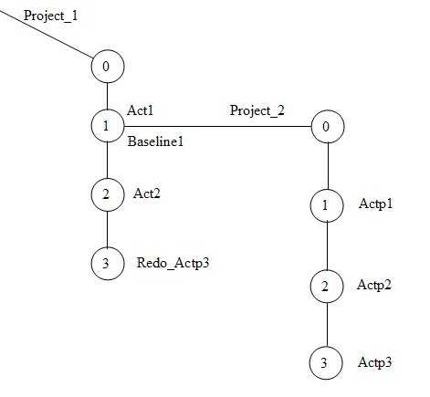

In some cases, and in some situations, people on other streams may only want certain changes propagated to their stream out of a large set of changes. A deliver of the activity would attempt to merge starting at the cset version (so including activity versions up to the activity’s versions being delivered). Cset.pl would simply redo that activity’s cset. Lets look at some pictures to show the difference between a deliver (or findmerge –cset) with a cset.pl –redo:

In the above picture, if you were able to deliver activities (Actp1, Actp2,
Actp3) from the integration stream of Project_2 to the integration stream
of Project_1, then the Deliver1 activity would comprise of the changes
incorporated in activities Actp1, Actp2, and Actp3. There are a few problems
with this normal sequence to be aware of:
1) Currently, UCM only allows deliveries of baselines between project
integration streams, so the above example is not possible with Deliver
(but can be accomplished with cset.pl). So, pretend Project_2 is a developer
stream and things will work with deliver.
2) Suppose I only wanted to deliver Actp3’s changes? UCM will require
that Actp1 and Actp2 be delivered as well, even if they don’t relate to
the changes in Actp3. A developer may end up having to resolve conflicts
with activities they did not participate in. With only three activities
here, it may not be a big deal. Suppose I have a stream with 150 activities
on it, and I only want 15 of those on my project stream?
Let’s look at the picture for a cset.pl –redo operation:

By using the cset.pl –redo operation, you can create a new activity called Redo_Actp3, and simply do a ccperl cset.pl –redo Actp3 and ClearCase will perform the merge of only Actp3’s change set into your view. Note, there are no hyperlinks drawn in the Vtree, or nothing else currently stored within the activity Redo_Actp3 letting you know where it came from (thus the naming convention is important). But it will solve some of the issues that arise in certain UCM environments.
Let's take a look at the CSET.PL Undo operation...